Objectives:
- Learn Some LTSpice Basics: simulate lowpass, highpass and bandpass passive filters.
- Build the basic microphone circuit and test it with MATLAB and the Nano.
- Build the amplifier microphone circuit and test it with MATLAB and the Nano.
- Implement a filter, characterize it and compare its frequency response to our simulation result.
- Test the amplified microphone circuit only on the Nano (FFT on the Nano).
- Characterize our circuit and adapt the code for the Final Demo.
Materials:
- Robot
- Capacitors and resistors for amplifier and filter
- Jumper wires
- 1 x 9V battery and snap connector
- 1 x LM358 op-amp
- lab computer with speakers
Procedure:
1. Learn Some LTSpice Basics
In order to simulate the behavior of filters, we used LTSpice.
The low pass RC circuit with R=1.2kΩ and C=0.1μF and its simulation:

The high pass RC circuit with R=1.2kΩ and C=0.1μF and its simulation:

2. Build and Test the Microphone Circuit
We built a basic microphone circuit on our robot based on the graph below.
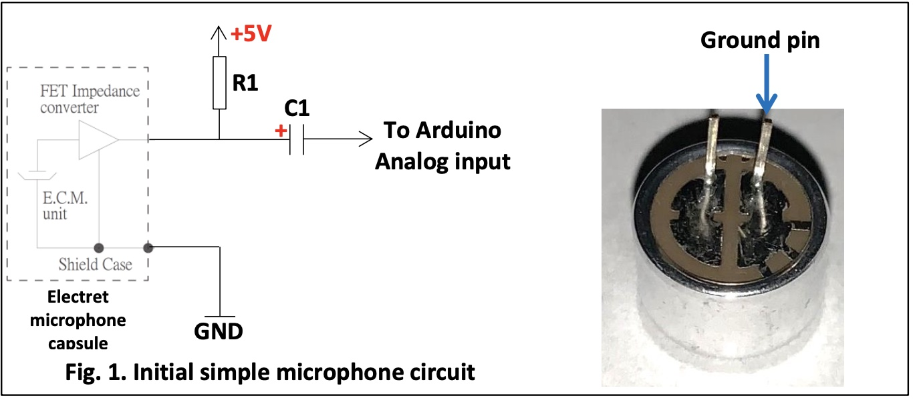We also wrote Arduino code to do ADC on sound picked up by the microphone and use MATLAB code to collect and analyze the data generated by the Arduino and visualize what is going on.
Below is the graph output by MATLAB that shows in the top part the time domain signal, and the spectrum of the 500Hz signal in the bottom.
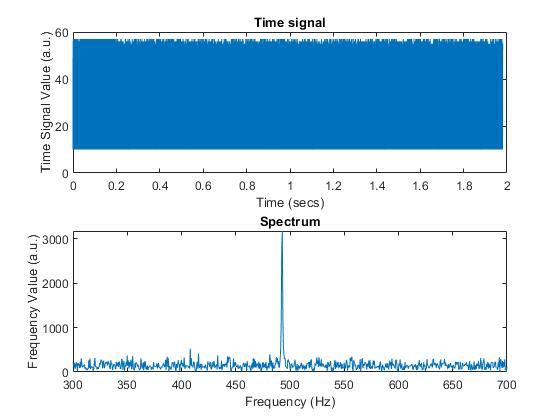As observed, the spectrum’s value at the frequency of 500 Hz is relatively weak because our microphone is not really good at picking up sounds. So we then improve the microphone circuit by adding an amplifier
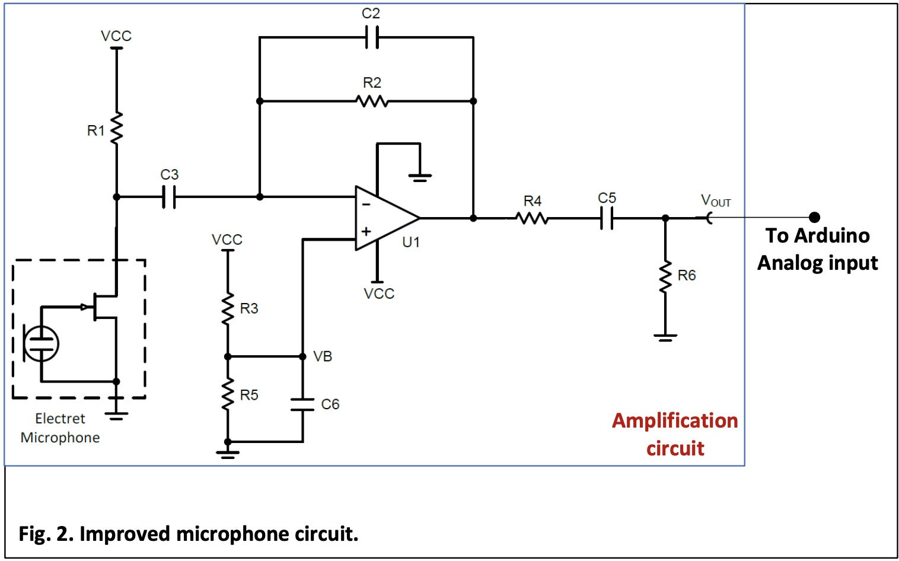With this new circuit implemented, we got the better output graph:
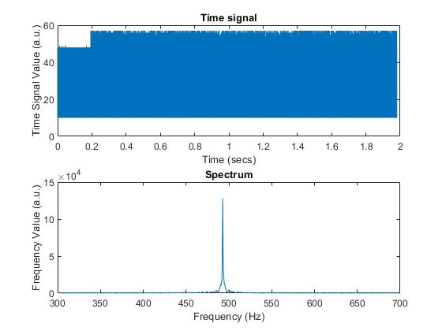3. Test a Filter
We then built a high pass filter at the end of our circuit based on the graph below:
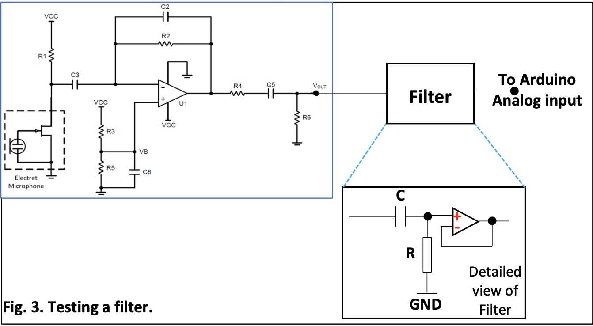The output of our microphone amplification circuit will be fed into the filter so that we can characterize the filter and compare it to what simulations predict.
In order for cut_off frequency to be somewhere between 500-1000Hz, we choose R = 10kΩ and C = 0.022μF.
Here's our connected circuit:
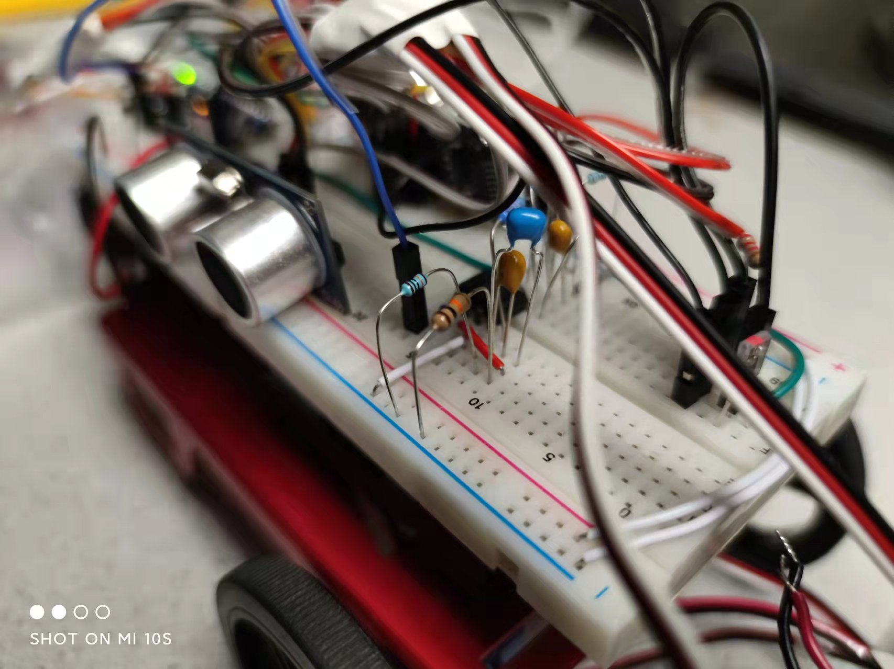After building the cuicuit, we wrote matlab code to compare the experimental frequency response to the simulated one. For simulated frequency response, we used data obtained from LTspice’s Bode plot for high pass filter circuit. For experimental frequency response, we used equation H(Ω) = Y(Ω)/X(Ω) to calculate, where Y(Ω) is our system's output signal's spectrum and X(Ω) is our system's input signal's spectrum.
The smoothed graph of superposition:
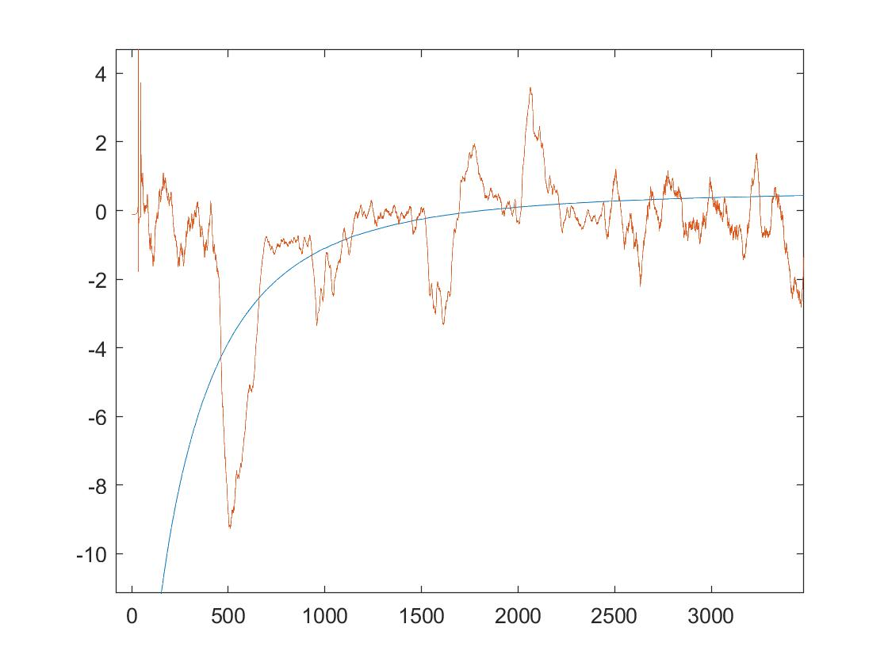The plot of the difference between the simulated and experimental filter responses:
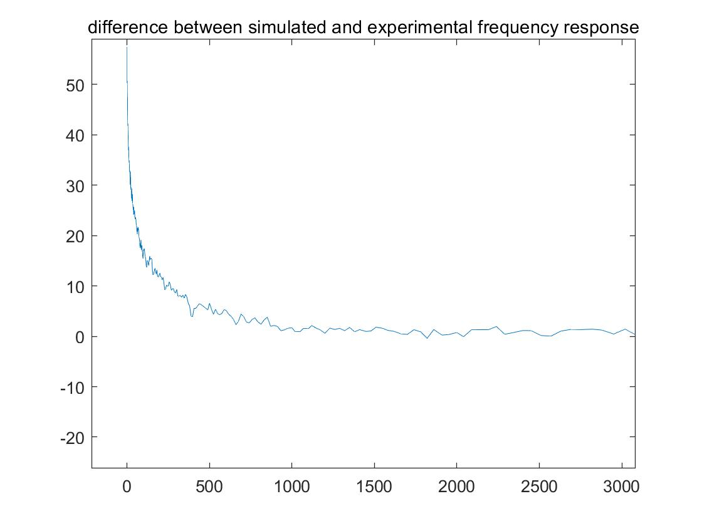4. FFT on Arduino
In order for our Arduino to perform Fourier analysis, we wrote Arduino code with the help from Arduino FFT library (V3.0).
Our code enables our robot to "listen" to the sound given, and the Nano will perform Fourier analysis on the signal to determine the frequency of the played sound so that the robot can take appropriate action.
With the code uploaded to and running in the Nano, we played a sound of 500Hz, 700Hz, and 900Hz, respectively, and observed a nice peak in/near the bin that corresponds to the frequency.
Spectrum obtained with the Nano for a sound frequency of 500 Hz:
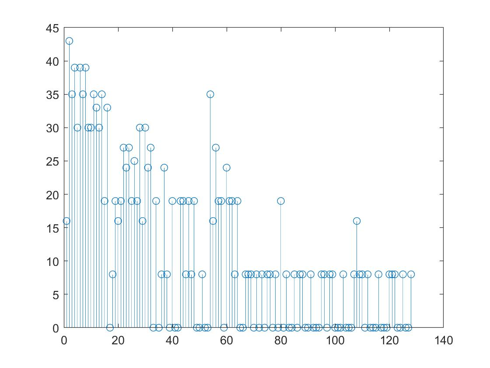Spectrum obtained with the Nano for a sound frequency of 700 Hz:
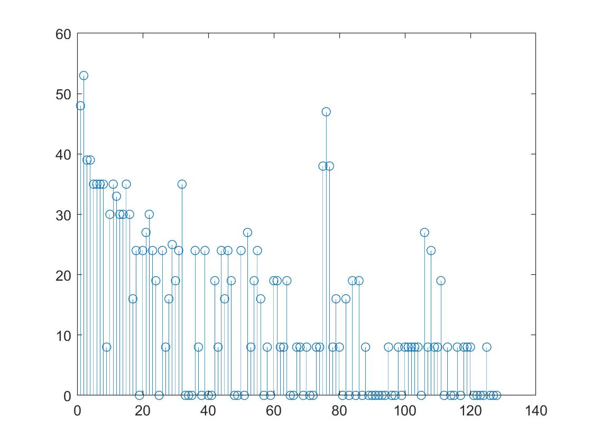Spectrum obtained with the Nano for a sound frequency of 900 Hz:
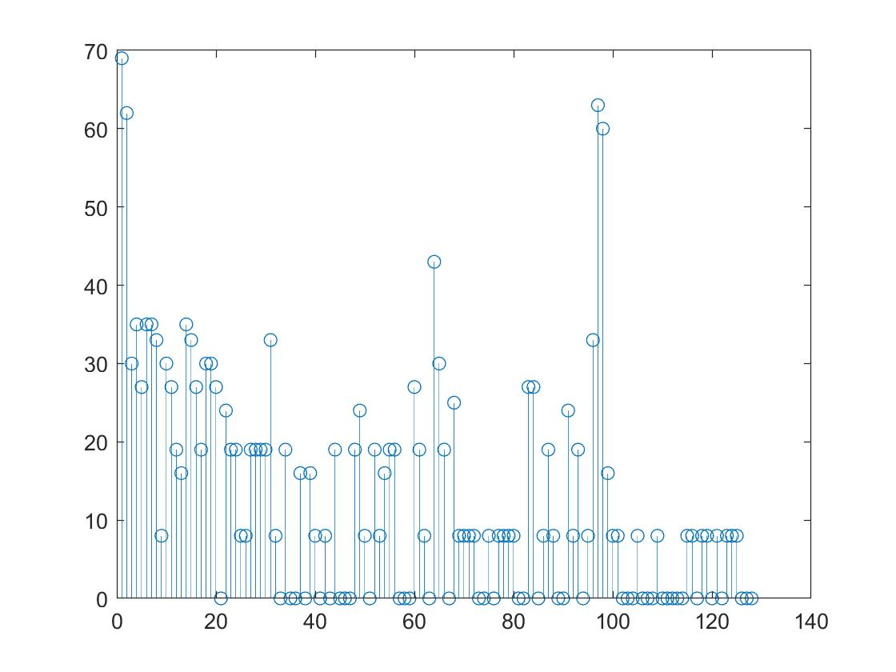